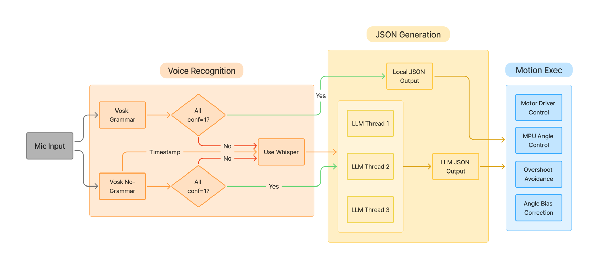

DUKE ECE 655L · FINAL PROJECT · DECEMBER 2025
IntelliCar
A hybrid voice-controlled rover with adaptive speech recognition, bounded JSON actions, and gyroscope feedback for closed-loop turning.
Demo
Voice commands, rover motion, and live execution logs. Play to hear audio.
Open video ↗System workflow
Simple commands take the local parsing path; natural language uses an LLM, with Whisper available for transcription fallback. A bounded JSON interface connects recognition to the motor controller.

Course project by Yihang Zou, Yuchu Guo, and Yifan Xu · Duke University
← Back to the IntelliCar project